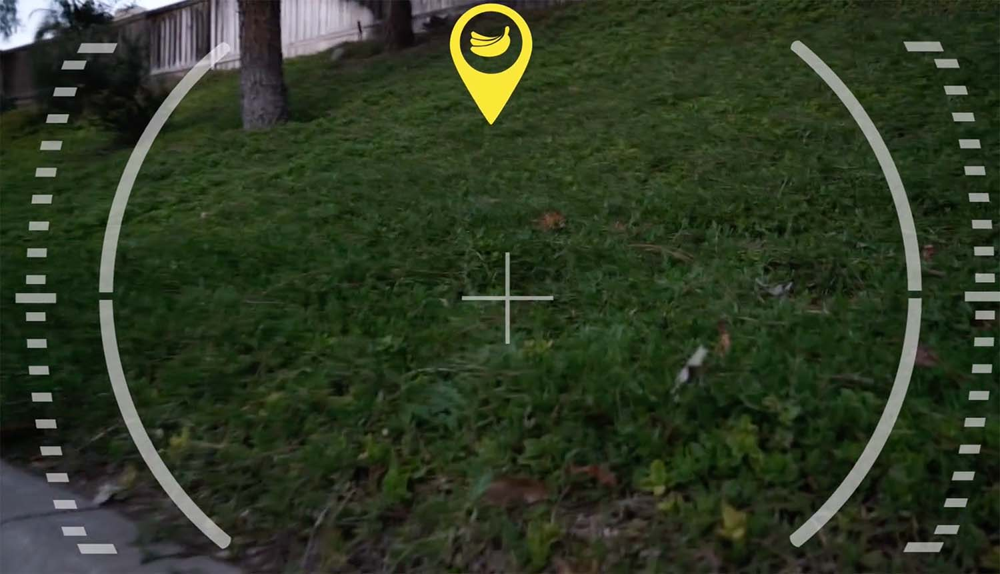
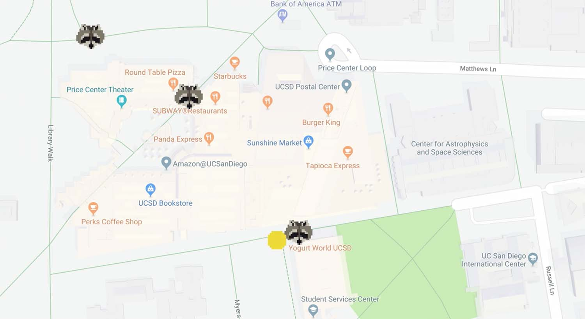
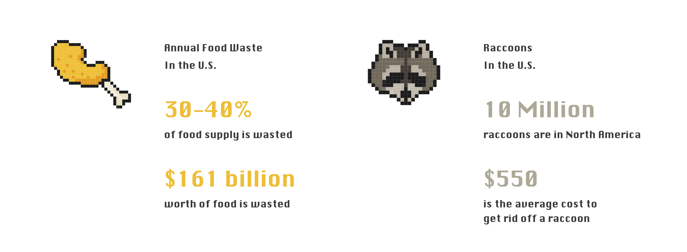
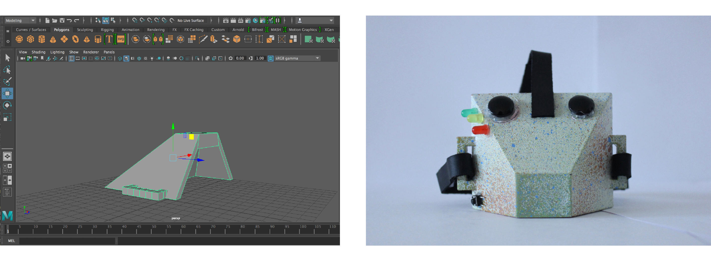

CYCLECCOON
Speculative Design · 2017
OVERVIEW
Cycleccoon is an augmented-reality system for raccoons, created out of the endeavor to manage the amount of food waste humans discard and to aid in the conservation of the environment. In the imaginary scenario, raccoons become animal workers in charge of eliminating human food waste. Wear augmented reality headsets, they roam the streets of La Raccoona city and consume food waste that human citizens discard on the streets of the city and in public trash cans. The raccoons are able to detect the food that needs to be consumed through highly developed object recognition software which identifies food items that are in the raccoons’ line of vision and leads them to it.
TOOLS
Adobe Photoshop
Adobe After Effects
Maya
AUGMENTED-REALITY PROTOTYPE
The object recognition technology is not only able to identify food but also able to differentiate between food that has been discarded and food that humans are eating. A concern that arises out of the prominence of a traditionally “wild” species of animals among a human society is that the safety of the humans could be compromised. The augmented-reality headset modifies what the raccoons are able to see and blocks out any irrelevant scenery (similar to the “tunnel-vision” concept), including the presence of humans. This ensures that humans are safe, as raccoon attacks are highly unlikely because of the extent to which the raccoons’ visions are regulated.
LOCATION TRACKING
GPS is incorporated into the product and the system in which it functions: when a raccoon is in active work state, they are led to desired location determined by Cyberccoon personnel (the operations room from which the system is run), and are motivated to travel there by signals sent to individual headsets. When the raccoons are not in active work state, they are led to forested areas to rest and reside in.
THE MAKING PROCESS
Research
A tremendous amount of food is wasted in the United States every year. According to U.S. Department of Agriculture, "In the United States, food waste is estimated at between 30-40 percent of the food supply. This estimate, based on estimates from USDA’s Economic Research Service of 31 percent food loss at the retail and consumer levels, corresponded to approximately 133 billion pounds and $161 billion worth of food in 2010." With an attempt to reduce food waste and the cost of food disposal, we think of the "gargabe pickers" that spread in the North Amercia — raccoons.
Modeling
I prototyped the 3D model with Maya and printed it out. Then I handed it over to my teammate for spraying the model and attaching lights and straps to it.
